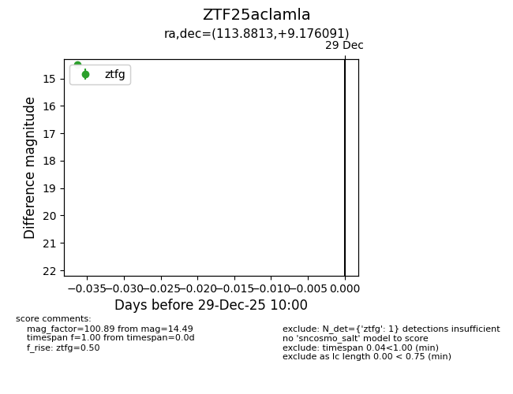
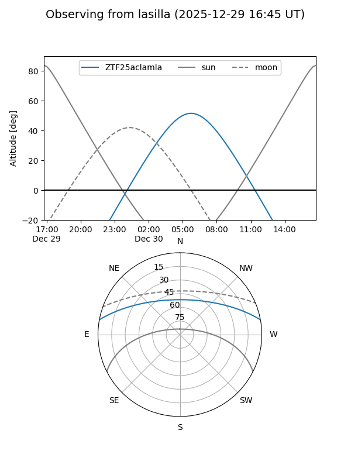
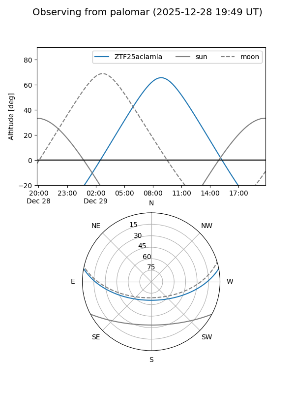

ZTF25aclamla
Target ZTF25aclamla at 2025-12-29 10:01
Aliases and brokers:
FINK: fink-portal.org/ZTF25aclamla
Lasair: lasair-ztf.lsst.ac.uk/objects/ZTF25aclamla
ALeRCE: alerce.online/object/ZTF25aclamla
alt names
ZTF25aclamla (ztf,fink_ztf)
Coordinates:
equatorial (ra, dec) = 113.8813,+9.17609
equatorial (HMS+DMS) = 07:35:31.50,+09:10:33.93
galactic (l, b) = (209.6323,+13.92714)
Flags:
Photometry:
last ztfg=14.49
1 ztfg detections
Lightcurve

Visibility


Additional plots